CMSC216 Exit Survey Results
Table of Contents
Summary Statistics for Multiple Choice Questions
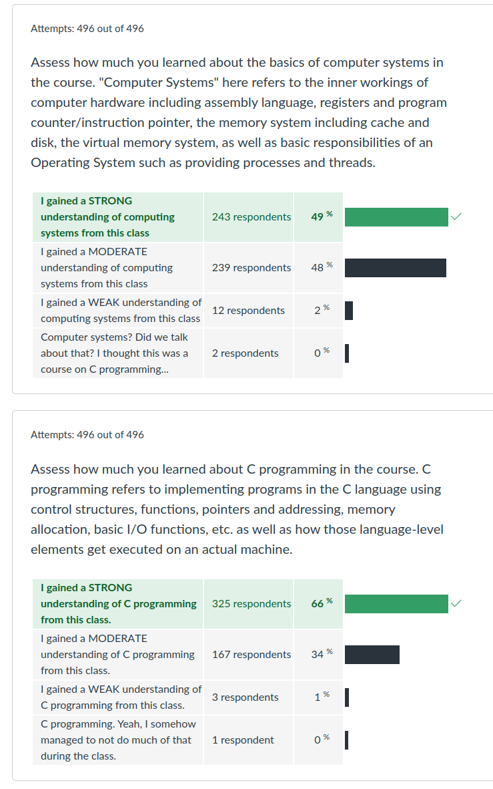
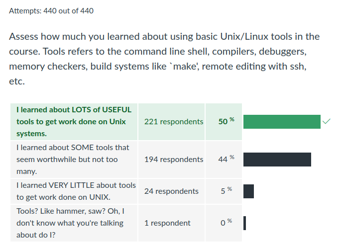
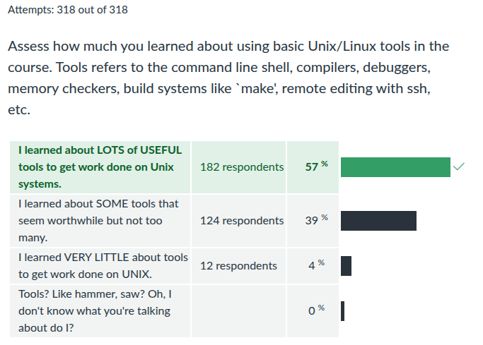
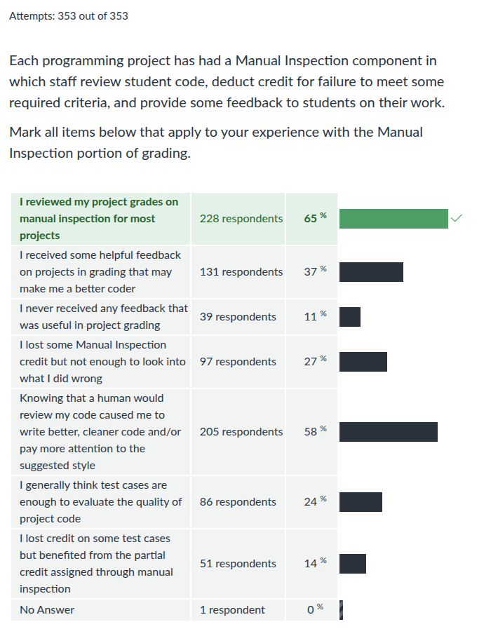
Despite some identified flaws, folks are generally accepting of the EP system on a whole which encourages its refinement rather than revolution.
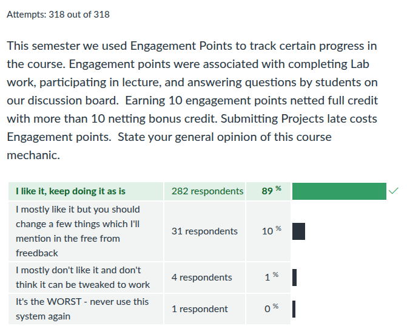
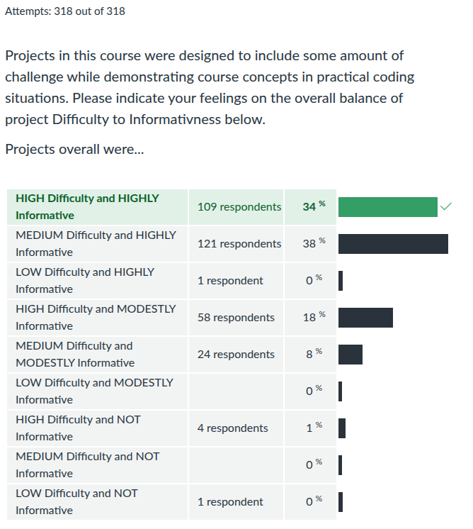
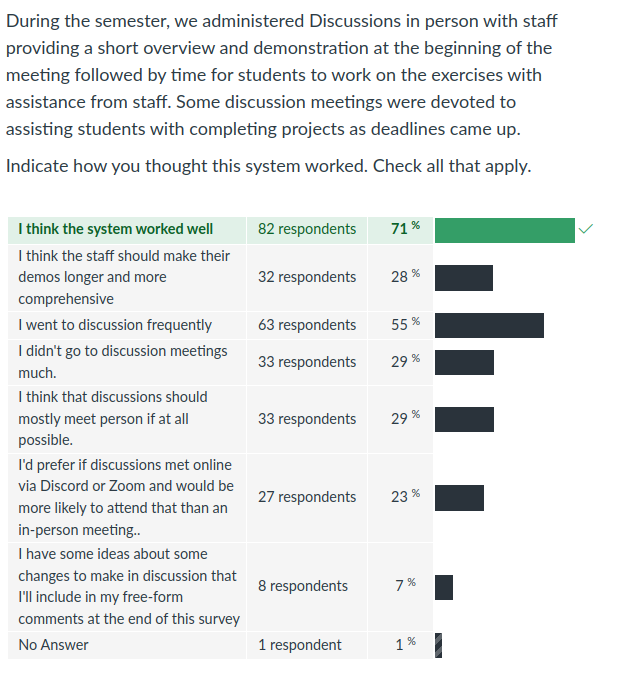
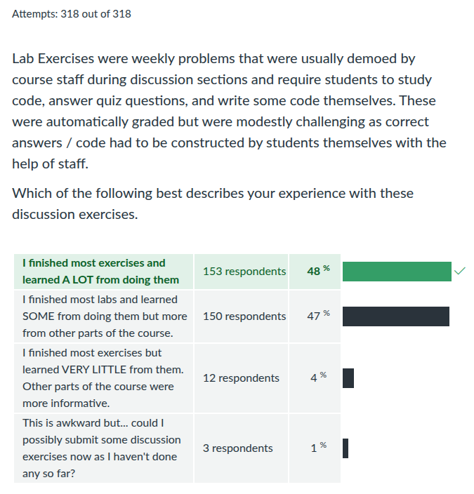
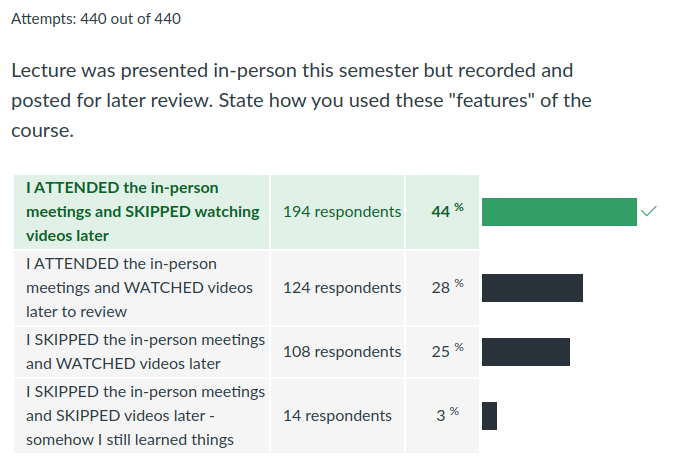
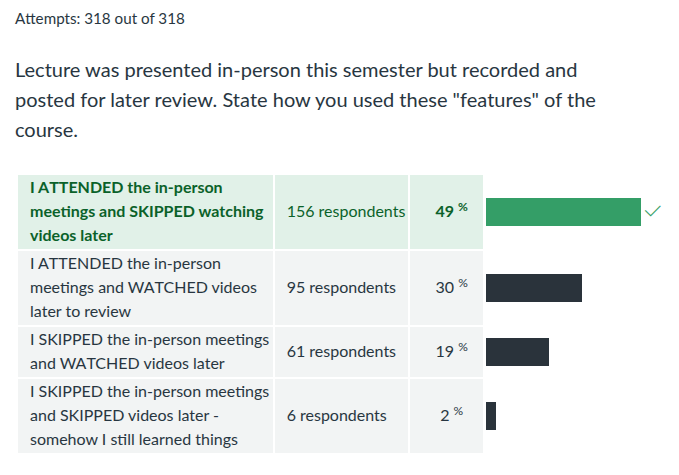
If one believes self-reporting, then the fraction of folks asking questions during lecture ONLY to earn points was 26 out of 144, about 20%. I'm willing to tolerate this based on the open atmosphere it allows for during our meetings.
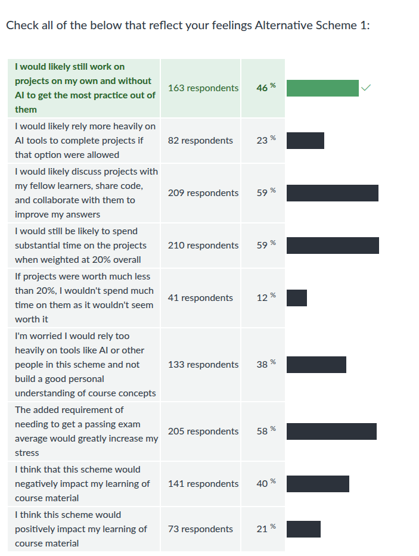
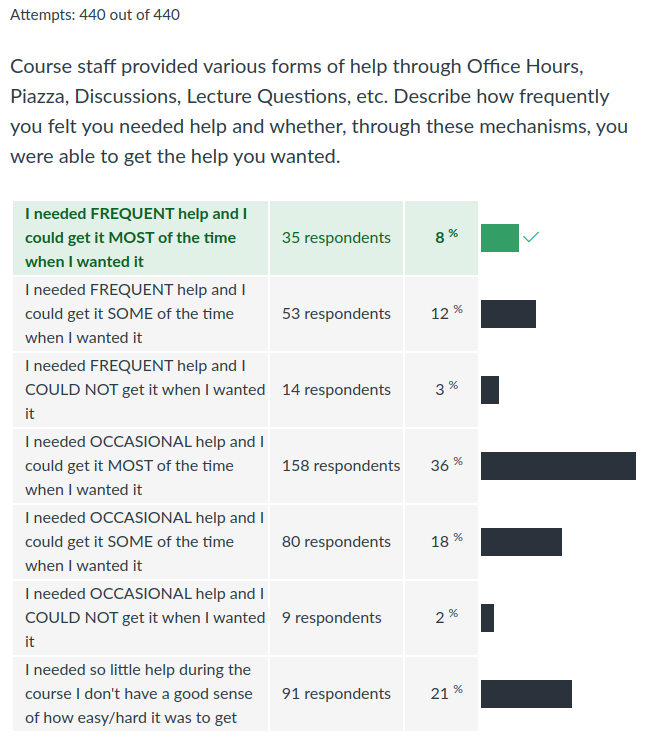
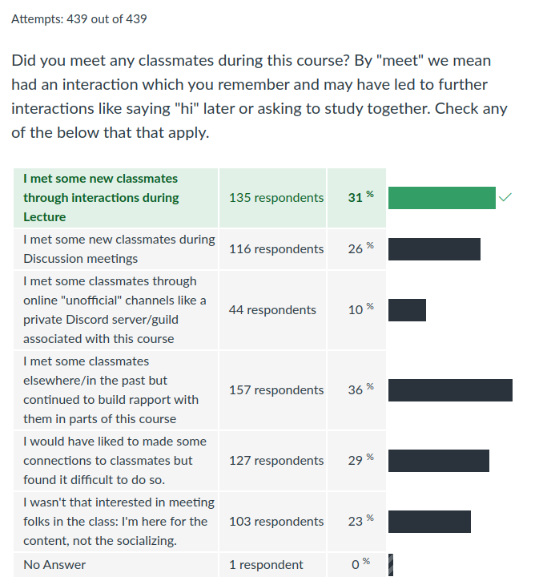
Freeform Feedback
Frequent Items in Freeform Feedback
| Count | Comment |
|---|---|
| Overall | |
| 25 | The course was very organized / structured |
| 81 | Enjoyed it / little to improve on / "Banger course" |
| Exams | |
| 4 | Liked having open resource exams |
| Projects | |
| 8 | Difficulty of projects incresed markedly over semester |
| 30 | "Puzzlebin was deathly" / "Puzzlebin was devil's spawn" "Nightmare" |
| 16 | Projects too time-consuming |
| 23 | Figuring out what to do on projects was taxing / instructions vague |
| 3 | Sunday 11:59pm deadlines please |
| 4 | Project videos helpful |
| 12 | P4 was disorganized |
| 18 | P3 was (too) hard |
| Labs/HWs | |
| 5 | Labs + HWs were out of sync with lecture |
| Other | |
| 1 | Bonus Engagement Point system too complex / needs better explanation |
| 5 | Too many questions in lecture, slows down the flow |
| 2 | Have some required attendance element in Discussion like quizzes |
| 1 | Want to know how many Engagement Points I hae |
| 3 | Need more help at the beginning with environment setup |
Props to Staff Members
A number of staff members were individually thanked by students in their free-form feedback for help during the semester.
| Staff Member | Thank-yous |
|---|---|
| Aadit N | 2 |
| Aditya | 1 |
| Ananya | 1 |
| Carter | 2 |
| CJ | 9 |
| Clara | 5 |
| Eckart | 3 |
| Feileen | 2 |
| Gavin | 6 |
| Kushal | 2 |
| Luis | 1 |
| Macy | 1 |
| Matthew | 2 |
| Rohan | 1 |
| Ryan | 3 |
| Sinmi | 1 |
| All TAs | 14 |
Notable Freeform Responses
Student comments are given in plain face.
Instructor responses are italicized.
Lectures
- My suggestion for future students would be to make the slides more descriptive and the wording more simple for each topic and their nuances, just as in CMSC131 and 132.
- I noticed somewhat of a disconnect between the lecture slides and the lectures themselves. In particular, there were often details on the slides that were never referred to out loud. For me at least, this made the presented information feel a bit more overwhelming than necessary. A suggestion I would have for the future is to either omit the unmentioned details from the slides to prevent confusion, or touch on every point on every slide.
I really appreciated the detailed slides available on the website so I could review those when I couldn't make it to lecture.
I appreciate specific feedback on slides that might be confusing and need improvement. If you have any, email me. Several folks mentioned the slides are "dense" which can be good or bad according to your preference. Since most students don't bother to read anything beyond slides (e.g. read associated textbooks), I've upped my slide density somewhat to try to make things self-contained with varying degrees of success.
Bonus engagement points incentivized the asking of questions that reduced the engagement of others.
Interesting take expressed eloquently. I'm not sure I agree. However, I do now have a great question to ask in the next semesters survey:
When other students ask questions during lecture, I find…
- I am interested and learn things from the answer
- I feel neutral as some questions are informative while others are less so
- I am bored as most of the questions don't reveal anything new to me nor confirm that I understand the topic being discussed
I suppose I could also just pose it as an agree/disagree with your well crafted statement. The answer is in the future.
- I didn't really like the idea of questions for engagement points because I didn't have any questions some times, but I did need some extra engagement points so I kind of felt like I should make up a question or two just to get the points. If I had a genuine question, I'd ask it regardless of whether or not I'd get points for it since I'd be interested in learning more.
- I also was too intimidated to go up to the front and give myself a dot even when I did participate.
By removing the ability to collect engagement points from class, I feel that classes will be more informative and filled less with ridiculous questions and comments being asked by students just so they can earn an engagement point (I recall that you called out someone for using ChatGPT to ask a question).
As engineers, consider the tradeoffs of what you are suggesting. We've all been in courses where asking questions is borderline taboo as they are met with irritation or derision. I found those experiences dissatisfying when I was a student. I would like a balance of interaction but favor more rather than less. I am very willing to tolerate some "dots farming" attempts or tangential questions if it fosters an overall open atmosphere of inquiry. I'll take 3 irrelevant questions if it encourages a genuinely curious 4th questioner.
One of my friends said he witnessed someone fill in 8 bubbles at the same time [for bonus Engagement Points]. Maybe he just forgot to fill them out earlier? We'll never know. Whether he was honest doesn't affect me, but perhaps emphasizing a deterrence for being caught (ie loss of all engagement points) would help make the system as a whole seem more fair to those who are honest. But then again, that's a lot of effort for you to go through and it doesn't seem that worth it.
I've used "honor" systems like this many years prior and folks generally abided by them without need for any special action from me: if a student didn't interact with me during lecture, they didn't fill in any dots; if they did interact, they filled in 1 dot. I expected the same to be true at UMD but have been proved wrong. One person wrote down 63 dots for their discussion participation. We only had about 30 classes last I checked. I will likely institute some more checks and balances as it seems a small number of students are unashamed to just blatantly give themselves credit for things they haven't done.
- Lectures are also super dry which makes it so much harder to try to learn anything from them. I get that it's a weed out class, but please, I'm not even a CS major or minor anymore, just let me live.
I love your energy & style. The time for discussion is awesome and I love the opportunity to immediately apply what I learned instead of just listening to a lecture (as awesome as they are).
You can't please everyone…
Sometimes Professor Kauffman would be witty with students asking stupid questions or asking something that was already asked - I liked this as it prevented people asking dumb questions, but it also personally discouraged me from asking questions in lecture when I needed clarification.
Sorry to hear my "sassyness" discouraged you from participating. If you find it hard to speak up in that way, look for a an alternate place to get clarification: piazza, office hours, email. Generally questions asked with genuine curiosity are never dumb. Sometimes they can be ill-timed: we talk about something for a while and I need to move us forward but someone missed something so wants to revisit it. That can frustrate me and it shows sometimes.
Office Hours
Going to office hours really helped for 216 since the TAs helped.
Glad to hear it.
I've also had friends say that they did not like certain TAs because of comments [the TA made]. I DO NOT believe these comments were meant maliciously, but the TAs should understand that their comment may discourage students if said carelessly.
A large fraction of TAs were first-timers and are still learning how impactful their interactions with students can be. I do my best to impress on TAs that our job is to assist students moving forward. Sometimes that involves being honest about students being behind or not showing enough effort. Other times human frustrations can get the better of us all and we may say things we regret. I'll keep reminding the staff to be firm but gentle with students to avoid any inadvertent discouragement.
The office hours can be improved. Sometimes, especially before project deadlines, I am waiting several hours (up to 3) to get help from a TA. In 132, I never had to wait over 30-40 minutes to get help… I would suggest looking into Nelson Padua-Perez's online queue system for office hours.
I'm glad you had a good time in 132. You are, unfortunately, wrong about the queuing system. I used "Quuly" while teaching CMSC330 in Fall 2023 and it did nothing to diminish the long wait times associated with office hours in that class. The fact is that the content is challenging and there is a high demand from students who want assistance from a limited number of staff. Technology will not fix that and in fact the online Queue system would fail or delete students sometimes which led to complaints about fairness. When I asked TAs mid-spring about whether they thought an online queuing system would improve matters, they indicated the whiteboard is just fine.
- I just wish it was easier to meet with TA's, it takes generally on average 30-50 minutes to meet with them and at that point I wish they had zoom sessions more often.
- MORE TAs for Office Hours when project due date is near
I think that in office hours there should be some rule when busy that a ta move on after 10 -15 minutes with one person instead of spending like 30 minutes. Sometimes I go into office hours and wait up to 2 hrs before getting help from a ta.
Office hours can get pretty busy, especially close to deadlines. Staff are under instruction that they should spend 10-15 minutes on any one student before cycling to the next person. Folks have varying levels of proficiency at managing this and sometimes get hung up on an individual with a tricky problem.
We are likely to adjust allocations of TAs between discussions and office hours going forwards especially close to deadlines. This may help somewhat with the crunch close to deadlines. However, this is a perpetual problem that I've never solved over my teaching career. If you give students challenging projects which force them to master new skills, many of them will put off doing it to later than they should then get caught in a crush with their peers at the last minute.
One thing that hurts office hour throughput is something I directly observed on the day Project 4 was due. I spent 7 hours helping students in office hours. During that time, every student who came got helped, usually within an hour of their arrival. This would have been smaller but for the fact that students, on getting helped, would immediately add themselves back into the queue. Some even wrote their names down in the queue in multiple spots. This tactic meant that on arriving to help a student, they wouldn't have a specific question in mind and might just say "come back to me later." This isn't really how office hours should work especially close to a deadline. Having a specific issue that you need help to resolve is the intended purpose. It's fine to "hang out" if there's no one waiting, but when there are lots of folks who want help, milking staff for information as often as possible gets in the way of helping others in a timely fashion. I don't have any way to avoid this mind yet but I'll be working with staff on how we might set policies to prevent or at least limit this tactic.
AVW 4166 is awful, please get a room with a window for office hours.
Amen to that. AVW 4166 is getting a modest renovation this summer. There won't be windows added, but it will be reconfigured to give more space, more whiteboards, and should feel a little less like an afterthought. I was pretty shocked when I joined that a top-10 CS department doesn't have a better place for students to get help but at least my pestering is moving us a little forward.
Projects
Coding and debugging assignments takes a long time and a ton of focus, especially the thermostat projects, and I often found myself without the mental bandwidth to avoid falling behind. I feel like more lenient/flexible due dates or longer submission windows would've helped a lot.
Most projects had a 9-14 day turn-around from first release to on-time deadline. Sorry to hear that timeline and our existing late policy wasn't sufficient for you.
Project 4 had tests for functions that did not effectively find errors in the code. For numerous of the first couple functions from the project, I passed all tests with code that failed other function's tests later down the line when the new functions called old ones.
While I try to write software tests in a linear fashion, this turns out to be very hard to do in all but trivial cases. P4 was not trivial. With 450+ students banging on a new project, I'm not at all surprised that some students found a way to write incorrect code that passed some tests but needed to be adjusted once it was subjected to more rigorous testing. I'll likely adjust the tests somewhat for this.
Before I'd take your criticism too much to heart, I'd like to see the tests you wrote and how well they ferreted out bugs early.
- Maybe put a little less emphasis on handwriting assembly while still making sure the concept gets across.
The assembly project took me 50 hours to complete but It was my favorite project.
It is a mistake to think you can know a thing without doing it. Even if you listen to music a LOT and talk about it, most of you would understand making music via voice or instrument is another beast entirely. You would not know assembly without actually writing something appreciable in it yourself. This course requires that you know a bit of assembly so we write it. There is no other way.
- I thought the projects were a little excessive and hard. I felt a spent a lot of time on them but didn't even learn that much from them. I felt there were better ways to learn the content of the class rather than sitting there for hours on end trying to debug my code.
I liked the informative nature of project structures, as they incorporated both real-world use cases (such as the bakefile project or the low-level thermistor code) as well as general C and assembly concepts (such as puzzlebox and puzzlebin). I enjoyed this structure of projects and think that it should stay that way.
I'd be happy to talk to anyone about what they did or did not learn from projects. If I can have a serious conversation with someone who completed the projects and thinks they didn't teach anything and be convinced by their arguments, I'd be willing to make changes to the projects. That hasn't happened yet. I'll admit that some students may know some or all of the lessons projects are meant to demonstrate. However, that is different than projects not achieving their goal: to make someone unfamiliar more familiar and more capable. There is not substitute for time and practice to make that happen so expect that going forward.
I found it very annoying and stressful when the projects and labs had multiple bugs in them, especially with project 4. There were just way to many things wrong with the project on released and it discouraged me from working on it.
Sorry that there were bugs. I don't like them either. Understanding and coping with uncertainty is an important part of our discipline: customers change their minds, other teams adjust their designs, vendors provide buggy services that you must work around, and so on. If you are discouraged by the issues that came up in these projects which are nearly completely canned, you'll want to start broadening your mindset somewhat as a career in software engineering involves a LOT about managing and confronting bugs.
Projects are a bit too big: maybe do 10 smaller projects rather than 5 larger projects
No. If you want to learn to build big things, build big things. These projects are not big. My solution to P4's Bake system was 600ish lines with comments. In the scheme of software that is minuscule. GNU Make is 36,000+ lines of C with comments and it's not even that big. You only learn certain things about coding if you code larger systems. These are important things like the value of a garbage collector, whether a class hierarchy is well-though, and why interfaces/traits are preferable to inheritance. Most importantly you start to learn the limits of your own mind and how good design and engineering practice can help you work around them. Take on bigger projects so that your abilities expand and you are ready to do the real work of software engineering.
- I felt that project descriptions were a little vague at times and missed important details.
The project instructions were sometimes almost too detailed, especially in how they frequently outlined exactly how a method should run, and that may have detracted from learning a bit.
Folks want different levels of detail in their descriptions. The sign of a good compromise is that no one is completely happy.
- I took CMSC131 and 132 here at UMD and found the projects to be absolutely the most soul crushing, headache inducing, frustrating, assignments I have ever done. BUT they were VERY INSIGHTFUL on how coding is used in real life.
Though the projects were difficult, I felt that they prepared me for the exam in a way that I would barely have to study for it which was awesome
That's the idea and I'm glad it worked out for you.
The fact that we couldn't convert our project extra credit to engagement points. I feel like that would have motivated me to push myself and do more of the extra credit since I'm driven by grades
It's good to understand your own motivations. It gives you the opportunity to consider their utility. For example, in 3 years, you wont' have grades anymore. You'll need to find a new surrogate for that. Perhaps it will be advancement in a company. Five years later, when you find out it's hard to advance in a company as it involves significant politicking and luck, you find you abandon that external validation of effort. Perhaps then you'll start to do extra things because you enjoy them, because they bring you intrinsic satisfaction. Makeup credit is optional and it turns out most of the folks who did it didn't need to make up anything as they were doing just fine on the projects. It's there for folks who are interested in doing it for one reason or another. Consider your reasons and act accordingly.
- PLEASE for the love of god save the pain of assembly puzzlebin and dont give this on project 3 for future classes, or not (it kinda helped me learn gdb so i guess thats cool (also caused me to rethink my career path!)).
It's like Puzzlebox felt analogous to a cute kitten, whereas Puzzlebin felt analogous to a highly venomous snake.
Puzzlebin is a derivative of long-running assignment by our textbook authors, Byrant and O'Hallaron which is still used in many places. I'm likely to keep using it in part due to the challenge and due to urging from TAs that they felt, with some minor tweaks, it really forced students to get sharper in terms of their GDB skills and knowledge of how to interpret assembly. Don't let that assignment scare you: it's a rare job that will have you doing binary disassembly. However, it does cement the idea that one can never entirely hide code from those running it, an important lesson for all coders to internalize.
I see a few typos in the comments in the projects.
Me too. Perhaps next year is when I will learn to write error-free projects… but I doubt it.
Discussions / Labs / HAW
- During many of the projects, I came to expect that if I finished the associated lab, the project content would be significantly easier. This turned out to be true, and was definitely one of the more helpful parts about the class.
Labs felt properly built into the course material because the TAs had to introduce the content so that we could complete them, and then the information was reinforced and elaborated on in the lecture the following day. I would not change anything about how homework and labs are done in this course.
Glad to hear that the pieces fit together for you in the way that was intended.
I think it'd be best to standardize the discussion recordings more so that each recording has a portion reserved for discussing the learning object for that week, while the other portion may demonstrate just a single part of the lab to get us started.
I've never had TAs record discussion demos before. I'm not sure I'll continue to do so as it is a burden on staff and I'm not sure how much benefit it really provided. Students who want a demo can come to their discussion section. Students that want to do the lab independently can stay home.
For engagement points, it was not very clear how they worked in discussion sections as some TAs said that only answering Qs gives engagement points, some said asking Qs also gets points, some gave bonus points randomly - so the number of points you got felt a little arbitrary. Maybe just giving having students check their name for attending discussion section could be a more straightforward way to distribute points.
This was a point of difficulty. I'll address it next year by giving more clear guidance to TAs about how to administer dots in discussion.
I think it would be helpful for TA's to spend less time in the beginning explaining the concepts of the lab or demoing and more time at the end to walk through and explain the answers for the lab. Having time to try to figure out things on our own and then having the TA's show us how something should be done would be helpful in learning more from the lab exercises.
Interesting suggestion. We might try a "sandwich" model next year: brief intro, work time, and wrap-up answers at the end. I'll talk it over with the staff.
Miscellaneous
I think that one thing that would be good to add to the courses would be more practice problems to do outside of class.
If you can honestly say you did all the exercises on all 13 HWs and have QUESTIONS.txt answers for them, then I'll provide you with more. Every student whose asked for more has just clicked through HW quizzes without doing the exercises in the past and I expect that's so here as well. You also have a lot of exercise from the text book which you might try.
Most of it was my fault because i did not try that hard.
I appreciate your honesty. Keep in mind that "fault" can be a hard but fickle master. There were a lot of things I know I could have done better while leading this course. But my mom died. It's hard to say if my not trying harder is my own fault or it's because events totally out of my control sapped my will never giving me the chance to perform my best. There aren't answers to those questions. Just be easy on yourself and if there are some things you think you can change to up your game in the next round, try to make those changes.
Some suggestions would to have more assigned group work to increase collaboration skills in the context of CS.
This is a course about computing systems. It does not have a defined goal to teach teamwork coordination. There's already a lot on our plate and I'm not inclined to just adopt other complex subjects like effective coordination. If you are interested in those very worthy topics, I encourage you to study them. You're likely to find that, for a team to be effective, its members must have some individual capability that they can contribute. Early courses in many academic curricula are designed to ensure students who move through them gain that ability to individually contribute to a team. Only then does it make sense to start studying how to coordinate a group of effective individuals. There are opportunities to collaborate with others on labs, HWs, and general study. However, if teamwork were a primary part of this course, we would spend time educating you on how to be a team member. We don't have time for that and I'm not sure this is a good moment in your career for it anyway. Look forward to other courses where you'll have those opportunities.
Posting on Piazza would take a lot of effort for a simple fix.
Try StackOverflow and you may find that our Piazza board is quite forgiving by comparison. The act of effectively describing your problem is the first step to solving it. Doing so often presents you with an opportunity to address the problem yourself so it is worth the time and effort.
I found it difficult to follow along with the lectures and video descriptions as Professor Kauffman would tend to ramble and I would soon lose the purpose of the topic we were covering. I feel like maybe condensing the content into something more concise will help students better understand the content. Especially in the project description, I feel like an hour long video is too long and that students would better benefit from maybe a 30 minute video at max.
You're welcome to not watch any of the videos I've posted. While I certainly carry on sometimes, I put out materials that some folks say they find useful. If a 60-min video to cover P4 is too long, perhaps just watch the first 30 minutes of it? Students tell me they often watch some of the video. Work on relevant parts, then come back and watch more when they get to that part of the project. I guess that's the beauty of a video.
I wish your course was catered towards students who only take this course because its mandatory, and don't share the same excitement as you (prof K) and other high achieving students do.
This course is not mandatory. There are plenty of things you can do in life that don't involve C, assembly, and systems programming. There are plenty of majors that you can pick that don't have CMSC216 as part of their curriculum. However, every CS program I know of has a computing systems course at some point as it some of the most basic fabric that constitutes our craft. You don't have to love this stuff, but you do need to know it's down there and will likely be down there throughout any career in computing.
I think every CMSC216 TA deserves 10 million USD.
I second that sentient and forward the bill to the CS department. My guess is that we'll have to settle for occasional pizza.
VSCode itself is fine but I feel like it ultimately makes the class way easier if you allow them to use this very familiar tool.
This was course about computing systems. The editor or IDE one uses doesn't have that much bearing on those topics. We do try to address some tangential topics like learning to work with a remote system and gaining familiarity with basic UNIX command line interactions. However, they are somewhat incidental and we are definitely not going to take on effective code editing. In that respect, I'm very happy when folks can use a familiar tool to work on course topics. It helps teach that the topics are not some ancient set of incantations using archaic tools but are relevant and accessible. We'll have to find some other venue to demonstrate that vi is a good editor but Emacs is good life choice.
Advice to Future Students
- My only recommendation is to students: go to discussion, you can get help with projects, labs, and everything in between. If your TAs are anything like mine were, they'll sit with you and work through it until you get it (or at least until discussion ends) which beats waiting in a ~hour queue in office hours. …not sure how feasible it is, but some mixing of office hours with discussions might be more efficient because I've walked out of office hours when it was packed with only 2 TAs directly into my discussion which was basically empty with 4 TAs.
- I realize that passively re-reading lecture slides is a very bad way of studying; I need to actually test myself through actions.
- I would emphasize to future students to make sure they also update their notes while doing the project; I think 1/4 of learning comes from the projects and makes me realize erroneous understanding of concepts, etc.
- Some suggestions I have for future students is to START PROJECTS EARLY! Or at least start them asap. Just because you got away with starting one project late, does not mean you should keep doing that.
- I fully understand that whatever I get for my grade for this class was fully from my own doing,
- I think the main reference manual is a great resource that I will be thumbing through for the rest of my life. The K&R C manual is a concise book that serves as a great working reference while programming. Thank you for the books…
- I also met other students who were struggling and it helped to know that everyone was in the same boat
- I would add that the engagement point policy was kind of complicated and hard to wrap my head around. But honestly the best approach is probably to not worry too much about your exact engagement point amount and just do your best.
Good thoughts all around. Thanks!
Legit Concerns
Also, in terms of availability for office hours/Piazza, I wish that more of the TAs committed to their office hour times. At times, they would cancel and it could be inconvenient. I totally understand that they're occupied with other tasks outside of CMSC216, but I wish that more of them offered supplemental office hours for the times that they missed.
As students themselves, TAs did have frequent commitments that interfered with office hours. That said, canceling shortly before office hours were to occur is greatly frustrating for students. I'll address this with TAs so they know that this is NOT something to be done lightly and that frequent last-minute cancellations may cancel their renewal.
Personally I think that you should avoid assigning projects that are split by a notable break (e.g. Spring Break). In my experience, students tend to burn out before break and do very little work leading up to it, so having project due a few days after can be a bit of a shock.
This has alway been a struggle as the middle slice of the course dealing with assembly often comes in conflict with Spring Break or Thanksgiving depending on the Spring/Fall semester. I was reasonably happy with the way to schedule on paper as it gave students about 10 days to complete Project 3 without spring break and more like 20 days with spring break. Students and TAs though indicated that most folks didn't bother with the project before break and then were slammed after returning from break as they were not as well versed in assembly as they thought. I'll keep that in mind as I set future schedules.
My only complaint was that when I was working on it I had to use gedit, as MobaXterm does not support assembly code editing. This was fine, but for some reason it was so horrendously slow at the time that it was like using Google Docs on a 6 year old $20 Chromebook. Also it would just straight up crash at times, deleting so much of my work. There's nothing that can really be done about this, but my general piece of advice to future students would be to write assembly code in a local environment like VS code or even notepad (which I did).
I'm overall quite displeased with the infrastructure available for CMSC 216. GRACE is not a good system and is far below what I'd expect from any large university with CS department, especially one with the purported reputation UMD has. I'll be working to get some much needed upgrades for GRACE to service this course. We have a lot of students and require them to do certain things. The least the department can do is to provide an adequate system that has modern features like proper remote editing and SSH key support. I'm sorry that you had to crank your way through this cruddy infrastructure and I hope to spare future students that unnecessary pain.
It was tough but I learned a lot !
That's all I hope for.
Speed-Listening
- Kauffman does talk too fast to play 1.5x, but that's on me lol
- Kauffman talks at a good pace, to the point I can still watch the lecture videos on 1.5x speed.
- I watch lectures on 1.5 speed and its not problem
- 1.5x speed is good :).
- Also, it's not Kauffman's fault that he talks too fast to be understood at 1.5x speed.
- You get used to Kauffmans 1.5x speed of talking.
- I still watch the lectures at 1.5x speed
- I watched through the lectures at 1.75x speed and didn't find it too bad lol
- As someone who watched most of your lectures on 1.5x-2x speed when I missed them, I believe you do not talk too fast.
- lmao he does talk way to fast in 2x speed but if I squint my eyes really hard, I can get some words in
- To anyone who says Kauffman talks too fast for 1.5x, work your way up in 0.2 increments and by April you'll be watching all lectures in 2x no problem (albeit a lot of pausing to write stuff down).
- I watched lecture videos at 2x speed.
- I can understand him at 2x speed, but that's probably cause I watch videos at that speed by default.
- I wish the videos posted would actually allow us to listen to themfaster. I have ADHD, so being able to listen to videos at around 3.5x speed helps me a lot.
- They won't let me play videos at 5x speed! I have an extension that allows me to do that, but I guess ELMS hates me, because it automatically reverts any changes I make.
The Far Side
I've also developed a newfound hatred for Collatz sequences!
216, 108, 54, 27, 82, 41, …
I feel like a real wizard going back and forth between layout src and layout asm.
You should.

so we settled on using vim/gnu screen. I wish the systems were updated to use packages from this decade! I saw something about it being better to learn tmux since it's newer, but either Grace didn't have it or the version didn't have the features that screen had, so I was forced to learn screen.
Try emacs with emacs-server.
I hope that you have a really great life after this.
I plan to, but as has been said, "Life is what happens when you're making other plans."
- Screw assembly
- "Screw you guys, I'm going home"(S1 E1, Cartman), for the summer.
And to mash those last two up…
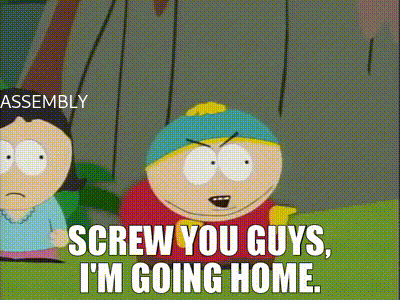
The current fastest implementation of fizzbuzz was written in c++ not assembly. ~208 GB/s in c++ with the runner up at ~60 GB/s in assembly. This says a lot about our society.
If I were into the fizzbuzz optimization I would compile the C++ version to assembly, then submit that as my assembly implementation to tie for the win. But I'm not that into fizzbuzzing.
- If you were an animal I think you would be a penguin. If you were a Pokemon I think you would be a Wingull or a Porygon2. Both of these statements are compliments
Perhaps…
Or maybe
But I think most probably..
Cheers!
-Prof K